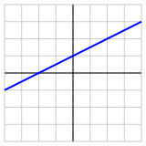

In this chapter, we have been looking at bases for \(\real^p\text{,}\) sets of vectors that are linearly independent and span \(\real^p\text{.}\) Frequently, however, we focus on only a subset of \(\real^p\text{.}\) In particular, if we are given an \(m\times n\) matrix \(A\text{,}\) we have been interested in both the span of the columns of \(A\) and the solution space to the homogeneous equation \(A\xvec = \zerovec\text{.}\) In this section, we will expand the concept of basis to describe sets like these.
Preview Activity3.5.1.
Let’s consider the following matrix \(A\) and its reduced row echelon form.
Are the columns of \(A\) linearly independent? Is the span of the columns \(\real^3\text{?}\)
Give a parametric description of the solution space to the homogeneous equation \(A\xvec = \zerovec\text{.}\)
Explain how this parametric description produces two vectors \(\wvec_1\) and \(\wvec_2\) whose span is the solution space to the equation \(A\xvec = \zerovec\text{.}\)
What can you say about the linear independence of the set of vectors \(\wvec_1\) and \(\wvec_2\text{?}\)
Let’s denote the columns of \(A\) as \(\vvec_1\text{,}\)\(\vvec_2\text{,}\)\(\vvec_3\text{,}\) and \(\vvec_4\text{.}\) Explain why \(\vvec_3\) and \(\vvec_4\) can be written as linear combinations of \(\vvec_1\) and \(\vvec_2\text{.}\)
Explain why \(\vvec_1\) and \(\vvec_2\) are linearly independent and
Our goal is to develop a common framework for describing subsets like the span of the columns of a matrix and the solution space to a homogeneous equation. That leads us to the following definition.
Definition3.5.1.
A subspace of \(\real^p\) is a subset of \(\real^p\) that is the span of a set of vectors.
Since we have explored the concept of span in some detail, this definition just gives us a new word to describe something familiar. Let’s look at some examples.
Example3.5.2.Subspaces of \(\real^3\).
In Activity 2.3.3 and the following discussion, we looked at subspaces in \(\real^3\) without explicitly using that language. Let’s recall some of those examples.
Suppose we have a single nonzero vector \(\vvec\text{.}\) The span of \(\vvec\) is a subspace, which we’ll write as \(S =
\laspan{\vvec}\text{.}\) As we have seen, the span of a single vector consists of all scalar multiples of that vector, and these form a line passing through the origin.
If instead we have two linearly independent vectors \(\vvec_1\) and \(\vvec_2\text{,}\) the subspace \(S=\laspan{\vvec_1,\vvec_2}\) is a plane passing through the origin.
Consider the three vectors \(\evec_1\text{,}\)\(\evec_2\text{,}\) and \(\evec_3\text{.}\) Since we know that every 3-dimensional vector can be written as a linear combination, we have \(S = \laspan{\evec_1, \evec_2,
\evec_3} = \real^3\text{.}\)
One more subspace worth mentioning is \(S=\laspan{\zerovec}\text{.}\) Since any linear combination of the zero vector is itself the zero vector, this subspace consists of a single vector, \(\zerovec\text{.}\)
In fact, any subspace of \(\real^3\) is one of these types: the origin, a line, a plane, or all of \(\real^3\text{.}\)
Activity3.5.2.
We will look at some sets of vectors and the subspaces they form.
If \(\vvec_1, \vvec_2,\ldots,\vvec_n\) is a set of vectors in \(\real^m\text{,}\) explain why \(\zerovec\) can be expressed as a linear combination of these vectors. Use this fact to explain why the zero vector \(\zerovec\) belongs to any subspace in \(\real^m\text{.}\)
Explain why the line on the left of Figure 3.5.3 is not a subspace of \(\real^2\) and why the line on the right is.

Figure3.5.3.Two lines in \(\real^2\text{,}\) one of which is a subspace and one of which is not.
Give a description of the subspace \(S=\laspan{\vvec_1,\vvec_2,\vvec_3,\vvec_4}\) of \(\real^3\text{.}\)
As the activity shows, it is possible to represent some subspaces as the span of more than one set of vectors. We are particularly interested in representing a subspace as the span of a linearly independent set of vectors.
Definition3.5.4.
A basis for a subspace \(S\) of \(\real^p\) is a set of vectors in \(S\) that are linearly independent and whose span is \(S\text{.}\) We say that the dimension of the subspace \(S\text{,}\) denoted \(\dim
S\text{,}\) is the number of vectors in any basis.
Example3.5.5.A subspace of \(\real^4\).
Suppose we have the 4-dimensional vectors \(\vvec_1\text{,}\)\(\vvec_2\text{,}\) and \(\vvec_3\) that define the subspace \(S = \laspan{\vvec_1,\vvec_2,\vvec_3}\) of \(\real^4\text{.}\) Suppose also that
From the reduced row echelon form of the matrix, we see that \(\vvec_2 = -\vvec\text{.}\) Therefore, any linear combination of \(\vvec_1\text{,}\)\(\vvec_2\text{,}\) and \(\vvec_3\) can be rewritten
as a linear combination of \(\vvec_1\) and \(\vvec_3\text{.}\) This tells us that
\begin{equation*}
S = \laspan{\vvec_1,\vvec_2,\vvec_3}
= \laspan{\vvec_1,\vvec_3}.
\end{equation*}
Furthermore, the reduced row echelon form of the matrix shows that \(\vvec_1\) and \(\vvec_3\) are linearly independent. Therefore, \(\{\vvec_1,\vvec_3\}\) is a basis for \(S\text{,}\) which means that \(S\) is a two-dimensional subspace of \(\real^4\text{.}\)
Subspaces of \(\real^3\) are either
0-dimensional, consisting of the single vector \(\zerovec\text{,}\)
a 1-dimensional line,
a 2-dimensional plane, or
the 3-dimensional subspace \(\real^3\text{.}\)
There is no 4-dimensional subspace of \(\real^3\) because there is no linearly independent set of four vectors in \(\real^3\text{.}\)
There are two important subspaces associated to any matrix, each of which springs from one of our two fundamental questions, as we will now see.
Subsection3.5.2The column space of \(A\)
The first subspace associated to a matrix that we’ll consider is its column space.
Definition3.5.6.
If \(A\) is an \(m\times n\) matrix, we call the span of its columns the column space of \(A\) and denote it as \(\col(A)\text{.}\)
Notice that the columns of \(A\) are vectors in \(\real^m\text{,}\) which means that any linear combination of the columns is also in \(\real^m\text{.}\) Since the column space is described as the span of a set of vectors, we see that \(\col(A)\) is a subspace of \(\real^m\text{.}\)
Activity3.5.3.
We will explore some column spaces in this activity.
Explain why \(\vvec_3\) can be written as a linear combination of \(\vvec_1\) and \(\vvec_2\) and why \(\col(A)=\laspan{\vvec_1,\vvec_2}\text{.}\)
Explain why the vectors \(\vvec_1\) and \(\vvec_2\) form a basis for \(\col(A)\) and why \(\col(A)\) is a 2-dimensional subspace of \(\real^3\) and therefore a plane.
Now consider the matrix \(B\) and its reduced row echelon form:
Explain why \(\col(B)\) is a 1-dimensional subspace of \(\real^2\) and is therefore a line.
For a general matrix \(A\text{,}\) what is the relationship between the dimension \(\dim~\col(A)\) and the number of pivot positions in \(A\text{?}\)
How does the location of the pivot positions indicate a basis for \(\col(A)\text{?}\)
If \(A\) is an invertible \(9\times9\) matrix, what can you say about the column space \(\col(A)\text{?}\)
Suppose that \(A\) is an \(8\times 10\) matrix and that \(\col(A) = \real^8\text{.}\) If \(\bvec\) is an 8-dimensional vector, what can you say about the equation \(A\xvec = \bvec\text{?}\)
Example3.5.7.
Consider the matrix \(A\) and its reduced row echelon form:
and denote the columns of \(A\) as \(\vvec_1,\vvec_2,\ldots,\vvec_5\text{.}\)
It is certainly true that \(\col(A) =
\laspan{\vvec_1,\vvec_2,\ldots,\vvec_5}\) by the definition of the column space. However, the reduced row echelon form of the matrix shows us that the vectors are not linearly independent so \(\vvec_1,\vvec_2,\ldots,\vvec_5\) do not form a basis for \(\col(A)\text{.}\)
From the reduced row echelon form, however, we can see that
This means that any linear combination of \(\vvec_1,\vvec_2,\ldots,\vvec_5\) can be written as a linear combination of just \(\vvec_1\) and \(\vvec_2\text{.}\) Therefore, we see that \(\col(A) = \laspan{\vvec_1,\vvec_2}\text{.}\)
Moreover, the reduced row echelon form shows that \(\vvec_1\) and \(\vvec_2\) are linearly independent, which implies that they form a basis for \(\col(A)\text{.}\) This means that \(\col(A)\) is a 2-dimensional subspace of \(\real^3\text{,}\) which is a plane in \(\real^3\text{,}\) having basis
In general, a column without a pivot position can be written as a linear combination of the columns that have pivot positions. This means that a basis for \(\col(A)\) will always be given by the columns of \(A\) having pivot positions. This leads us to the following definition and proposition.
Definition3.5.8.
The rank of a matrix \(A\) is the number of pivot positions in \(A\) and is denoted by \(\rank(A)\text{.}\)
Proposition3.5.9.
If \(A\) is an \(m\times n\) matrix, then \(\col(A)\) is a subspace of \(\real^m\) whose dimension equals \(\rank(A)\text{.}\) The columns of \(A\) that contain pivot positions form a basis for \(\col(A)\text{.}\)
For example, the rank of the matrix \(A\) in Example 3.5.7 is two because there are two pivot positions. A basis for \(\col(A)\) is given by the first two columns of \(A\) since those columns have pivot positions.
As a note of caution, we determine the pivot positions by looking at the reduced row echelon form of \(A\text{.}\) However, we form a basis of \(\col(A)\) from the columns of \(A\) rather than the columns of the reduced row echelon matrix.
Subsection3.5.3The null space of \(A\)
The second subspace associated to a matrix is its null space.
Definition3.5.10.
If \(A\) is an \(m\times n\) matrix, we call the subset of vectors \(\xvec\) in \(\real^n\) satisfying \(A\xvec = \zerovec\) the null space of \(A\) and denote it by \(\nul(A)\text{.}\)
Remember that a subspace is a subset that can be represented as the span of a set of vectors. The column space of \(A\text{,}\) which is simply the span of the columns of \(A\text{,}\) fits this definition. It may not be immediately clear how the null space of \(A\text{,}\) which is the solution space of the equation \(A\xvec
= \zerovec\text{,}\) does, but we will see that \(\nul(A)\) is a subspace of \(\real^n\text{.}\)
Activity3.5.4.
We will explore some null spaces in this activity and see why \(\nul(A)\) satisfies the definition of a subspace.
and give a parametric description of the solution space to the equation \(A\xvec = \zerovec\text{.}\) In other words, give a parametric description of \(\nul(A)\text{.}\)
This parametric description shows that the vectors satisfying the equation \(A\xvec=\zerovec\) can be written as a linear combination of a set of vectors. In other words, this description shows why \(\nul(A)\) is the span of a set of vectors and is therefore a subspace. Identify a set of vectors whose span is \(\nul(A)\text{.}\)
Use this set of vectors to find a basis for \(\nul(A)\) and state the dimension of \(\nul(A)\text{.}\)
The null space \(\nul(A)\) is a subspace of \(\real^p\) for which value of \(p\text{?}\)
Now consider the matrix \(B\) whose reduced row echelon form is given by
Give a parametric description of \(\nul(B)\text{.}\)
The parametric description gives a set of vectors that span \(\nul(B)\text{.}\) Explain why this set of vectors is linearly independent and hence forms a basis. What is the dimension of \(\nul(B)\text{?}\)
For a general matrix \(A\text{,}\) how does the number of pivot positions indicate the dimension of \(\nul(A)\text{?}\)
Suppose that the columns of a matrix \(A\) are linearly independent. What can you say about \(\nul(A)\text{?}\)
Example3.5.11.
Consider the matrix \(A\) along with its reduced row echelon form:
To find a parametric description of the solution space to \(A\xvec=\zerovec\text{,}\) imagine that we augment both \(A\) and its reduced row echelon form by a column of zeroes, which leads to the equations
It is straightforward to check that these vectors are linearly independent, which means that \(\vvec_1\text{,}\)\(\vvec_2\text{,}\) and \(\vvec_3\) form a basis for \(\nul(A)\text{,}\) a 3-dimensional subspace of \(\real^5\text{.}\)
As illustrated in this example, the dimension of \(\nul(A)\) is equal to the number of free variables in the equation \(A\xvec=\zerovec\text{,}\) which equals the number of columns of \(A\) without pivot positions or the number of columns of \(A\) minus the number of pivot positions.
Proposition3.5.12.
If \(A\) is an \(m\times n\) matrix, then \(\nul(A)\) is a subspace of \(\real^n\) whose dimension is
\begin{equation*}
\dim~\nul(A) = n - \rank(A).
\end{equation*}
\begin{equation*}
\dim~\col(A) + \dim~\nul(A) = n.
\end{equation*}
Subsection3.5.4Summary
Once again, we find ourselves revisiting our two fundamental questions concerning the existence and uniqueness of solutions to linear systems. The column space \(\col(A)\) contains all the vectors \(\bvec\) for which the equation \(A\xvec = \bvec\) is consistent. The null space \(\nul(A)\) is the solution space to the equation \(A\xvec = \zerovec\text{,}\) which reflects on the uniqueness of solutions to this and other equations.
A subspace \(S\) of \(\real^p\) is a subset of \(\real^p\) that can be represented as the span of a set of vectors. A basis of \(S\) is a linearly independent set of vectors whose span is \(S\text{.}\)
If \(A\) is an \(m\times n\) matrix, the column space \(\col(A)\) is the span of the columns of \(A\) and forms a subspace of \(\real^m\text{.}\)
A basis for \(\col(A)\) is found from the columns of \(A\) that have pivot positions. The dimension is therefore \(\dim~\col(A) = \rank(A)\text{.}\)
The null space \(\nul(A)\) is the solution space to the homogeneous equation \(A\xvec = \zerovec\) and is a subspace of \(\real^n\text{.}\)
A basis for \(\nul(A)\) is found through a parametric description of the solution space of \(A\xvec =
\zerovec\text{,}\) and we have that \(\dim~\nul(A) = n -
\rank(A)\text{.}\)
Exercises3.5.5Exercises
1.
Suppose that \(A\) and its reduced row echelon form are
The null space \(\nul(A)\) is a subspace of \(\real^p\) for what \(p\text{?}\) The column space \(\col(A)\) is a subspace of \(\real^p\) for what \(p\text{?}\)
What are the dimensions \(\dim~\nul(A)\) and \(\dim~\col(A)\text{?}\)
Find a basis for the column space \(\col(A)\text{.}\)
Find a basis for the null space \(\nul(A)\text{.}\)
Is the vector \(\threevec{0}{-1}{-1}\) in \(\col(A)\text{?}\)
Is the vector \(\fourvec{2}{1}{0}{2}\) in \(\col(A)\text{?}\)
Is the vector \(\threevec{2}{-2}{0}\) in \(\nul(A)\text{?}\)
Is the vector \(\fourvec{1}{-1}{3}{-1}\) in \(\nul(A)\text{?}\)
Is the vector \(\fourvec{1}{0}{1}{-1}\) in \(\nul(A)\text{?}\)
3.
Determine whether the following statements are true or false and provide a justification for your response. Unless otherwise stated, assume that \(A\) is an \(m\times n\) matrix.
If \(A\) is a \(127\times 341\) matrix, then \(\nul(A)\) is a subspace of \(\real^{127}\text{.}\)
If \(\dim~\nul(A) = 0\text{,}\) then the columns of \(A\) are linearly independent.
If \(\col(A) = \real^m\text{,}\) then \(A\) is invertible.
If \(A\) has a pivot position in every column, then \(\nul(A) = \real^n\text{.}\)
If \(\col(A) = \real^m\) and \(\nul(A) =
\{\zerovec\}\text{,}\) then \(A\) is invertible.
4.
Explain why the following statements are true.
If \(B\) is invertible, then \(\nul(BA) =
\nul(A)\text{.}\)
If \(B\) is invertible, then \(\col(AB) =
\col(A)\text{.}\)
If \(A\sim A'\text{,}\) then \(\nul(A) = \nul(A')\text{.}\)
5.
For each of the following conditions, construct a \(3\times
3\) matrix having the given properties.
\(\dim~\nul(A) = 0\text{.}\)
\(\dim~\nul(A) = 1\text{.}\)
\(\dim~\nul(A) = 2\text{.}\)
\(\dim~\nul(A) = 3\text{.}\)
6.
Suppose that \(A\) is a \(3\times 4\) matrix.
Is it possible that \(\dim~\nul(A) = 0\text{?}\)
If \(\dim~\nul(A) = 1\text{,}\) what can you say about \(\col(A)\text{?}\)
If \(\dim~\nul(A) = 2\text{,}\) what can you say about \(\col(A)\text{?}\)
If \(\dim~\nul(A) = 3\text{,}\) what can you say about \(\col(A)\text{?}\)
If \(\dim~\nul(A) = 4\text{,}\) what can you say about \(\col(A)\text{?}\)
In this section, we saw that the solution space to the homogeneous equation \(A\xvec = \zerovec\) is a subspace of \(\real^p\) for some \(p\text{.}\) In this exercise, we will investigate whether the solution space to another equation \(A\xvec = \bvec\) can form a subspace.